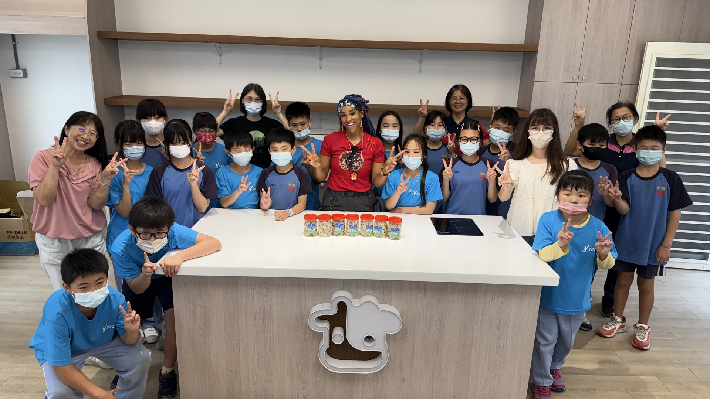
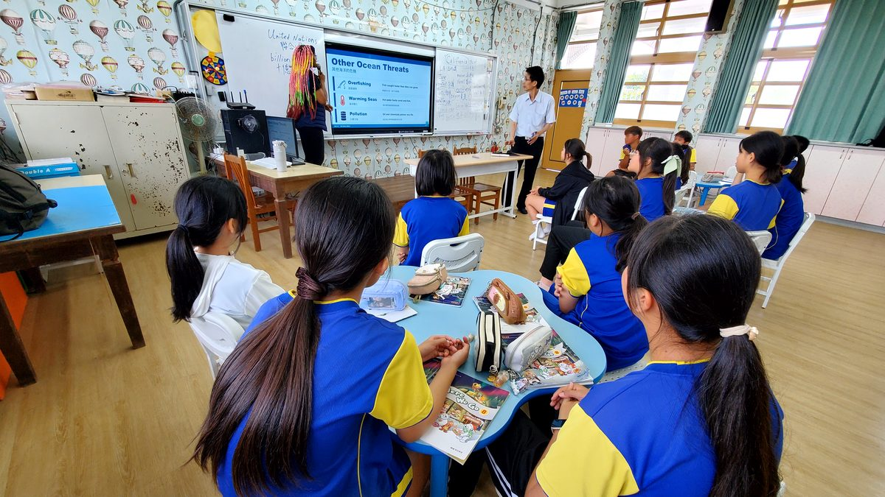
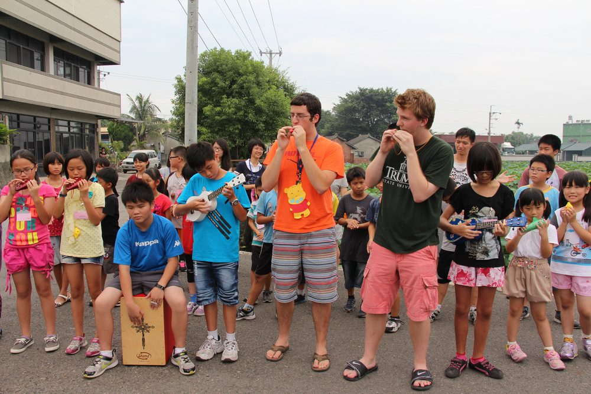
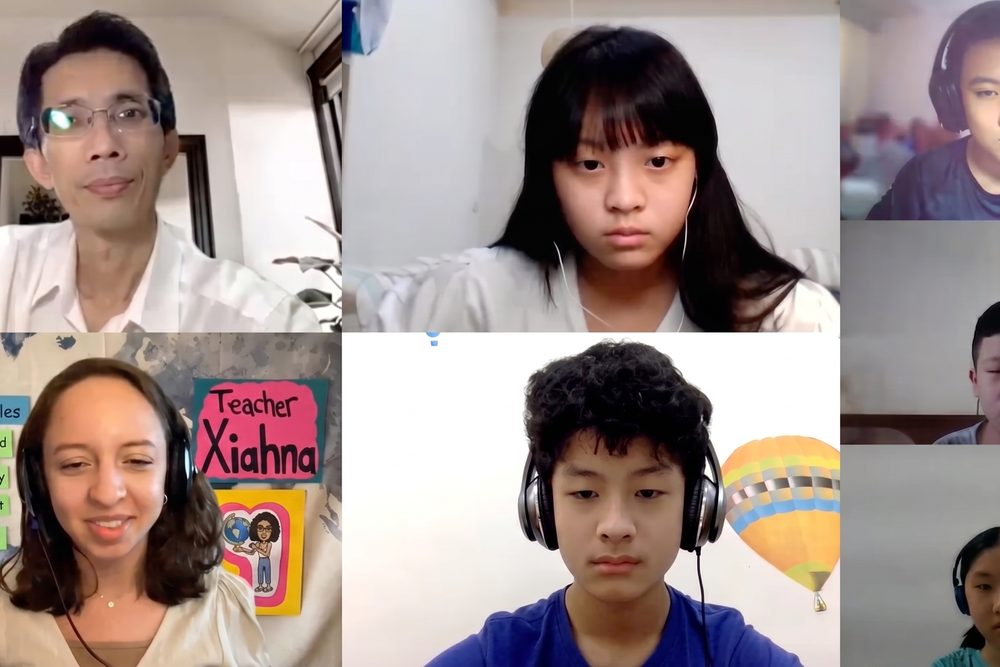
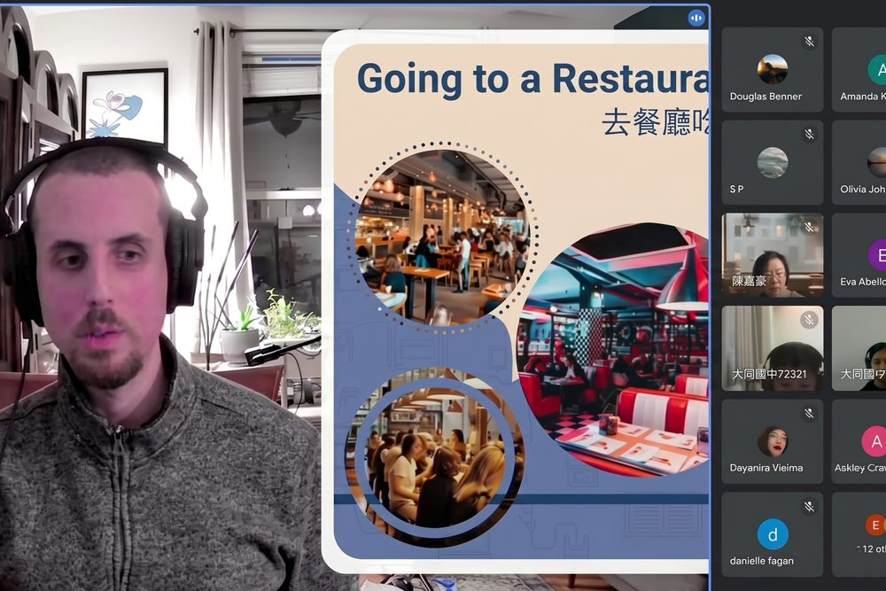
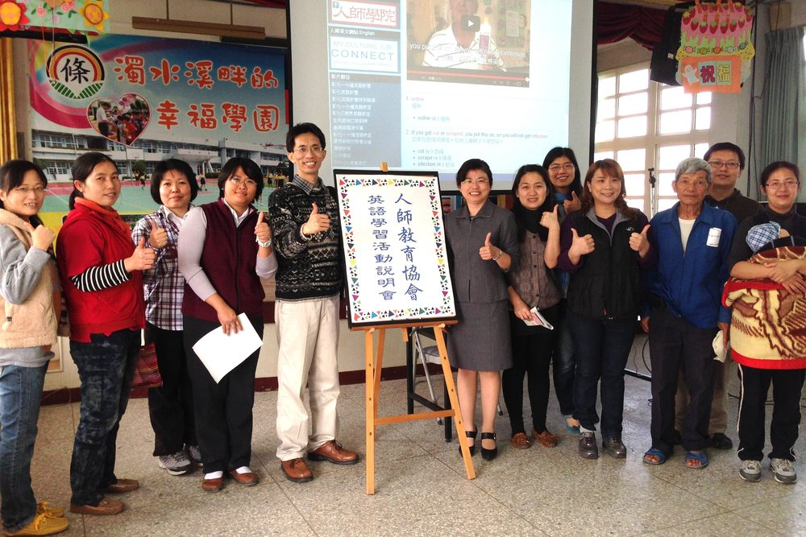
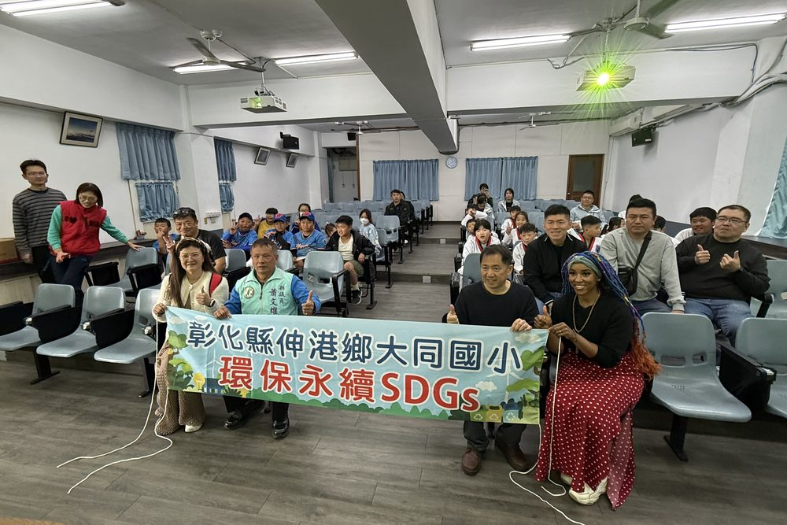

About
Founded on January 1, 2009, My Culture Connect (MCC) is a Taiwan-based nonprofit organization dedicated to enriching education and cultural exchange, with a special focus on Changhua County and central Taiwan.
Known locally as Renshi (人師)—meaning “role models” or “teachers of people”—MCC inspires cooperation, understanding, and global connection through education.
Learn about our team
What we do

01We help schools in central Taiwan—especially in rural Changhua County—create English-language websites that support exchange programs and international collaboration.

02We provide a practicum platform for aspiring teachers pursuing TEFL or TESOL certification. Student teachers gain real classroom experience, while our students practice spoken English—at no cost—in a supportive learning environment.

03We offer free English classes to students in rural communities, helping them build confidence, skills, and global awareness.

04MCC partners with over 100 public schools in central Taiwan, working closely with educators to strengthen education and cultural exchange.

05We actively promote the United Nations Sustainable Development Goals (SDGs). Through partnerships with UNA-USA chapters, we raise awareness and encourage global action toward a more sustainable future.
Our Work
Schools & organizations
Free English classes
Students’ lives impacted
Become part of the story
Whether you are a certifying student teacher, a lifelong educator, or an organization that shares our mission — we would love to connect.
See opportunities Contact us